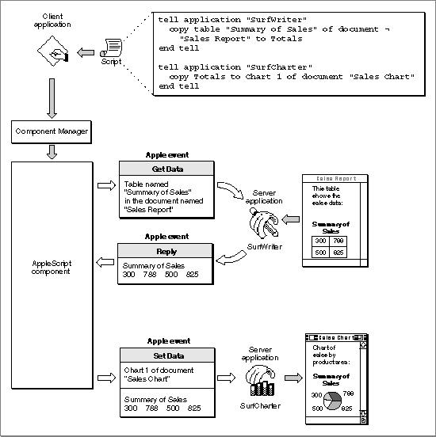

Scripting Components and Scriptable Applications
Scripting components control the behavior of scriptable applications by means of Apple events. For example, when the AppleScript component executes the AppleScript script shown in Figure 7-1, it sends the Apple events shown in Figure 7-3 to trigger the actions described by the script. The client application in this example would most commonly be a script editor but could also be any other application that uses standard scripting component routines to manipulate and execute scripts.Figure 7-3 How the AppleScript component executes a script

As described in the chapter "Introduction to Apple Events" in this book, a client application is any application that uses Apple events to request a service or information. A client application that executes a script does not send the corresponding Apple events itself; instead, it uses scripting component routines to manipulate and execute the script. The scripting component sends Apple events when necessary to trigger the actions described in the script. Similarly, a scriptable application that responds to the Apple events sent by a scripting component can be considered the server application for those Apple events.
When a scripting component evaluates a script, it attempts to perform all the actions described in the script, including sending Apple events when necessary. In the example shown in Figure 7-3, the AppleScript component first performs the action described in the first
tellstatement:tell application "SurfWriter" copy table "Summary of Sales" of document� "Sales Report" to Totals end tellTo perform this action, the AppleScript component sends a Get Data event to the SurfWriter application requesting the data from the specified table. The SurfWriter application returns the data to the AppleScript component in a standard reply Apple event, and the AppleScript component sets the value of the variableTotalsto the data returned by SurfWriter.Then the AppleScript component performs the action described in the second
tellstatement:tell application "SurfCharter" copy Totals to Chart 1 of document "Sales Chart" end tellIn this case, the AppleScript component sends a Set Data event to the SurfCharter application that sets the specified chart to the value of the variableTotals.Both SurfWriter and SurfCharter are server applications for the Apple events sent by the AppleScript component, because they are performing services in response to requests made by the client application via the script.
To send the appropriate Apple events to a scriptable application while executing a script, a scripting component must obtain information about the nature of that application's support for Apple events and the human-language terminology to associate with those events. A scriptable application provides this information in the form of an Apple event terminology extension (
'aete') resource. A scripting component uses both the'aete'resource provided by a scriptable application and the Apple event user terminology ('aeut') resource provided by the scripting component itself to obtain the information it needs to execute a script that controls that application.See "Making Your Application Scriptable," which begins on page 7-11, for an overview of the tasks you should perform to make your application scriptable and a more detailed description of the
'aete'and'aeut'resources. See "Making Your Application Recordable" on page 7-16 for an overview of the tasks you should perform if you want your application to be recordable as well as scriptable.